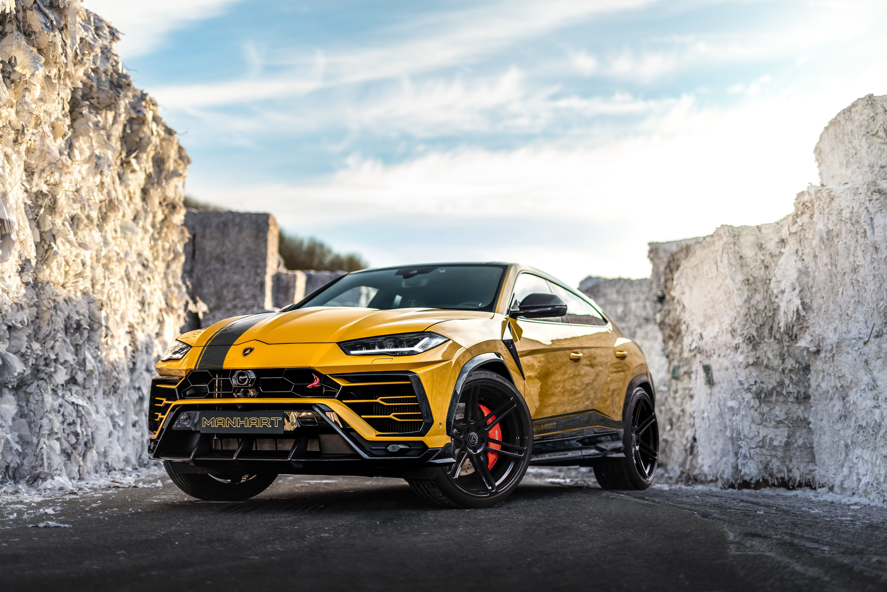

람보르기니의 대형 SUV. LM002에 이어 람보르기니의 2번째 SUV다. 투우, 투우사, 투우용 칼의 이름 등에서 적용된 람보르기니의 자동차 작명법에 따라 우루스는 황소의 조상인 고대 소 품종의 이름에서 가져왔다.
컨셉트카는 2012년 베이징 모터쇼에서 공개됐다. 형제차 포르쉐 카이엔 같은 세계적으로 고성능 SUV의 인기가 커지자, 과거에 망했던 LM002의 단종 20년만에 이 컨셉카를 공개했다. 4WD이며, V12 or V10 엔진이 들어간다는 루머가 있었지만 아우디의 4.0L TFSI엔진을 기반으로 만든 엔진이 들어가 600마력 정도를 발휘한다. 사이드 미러는 카메라이다.